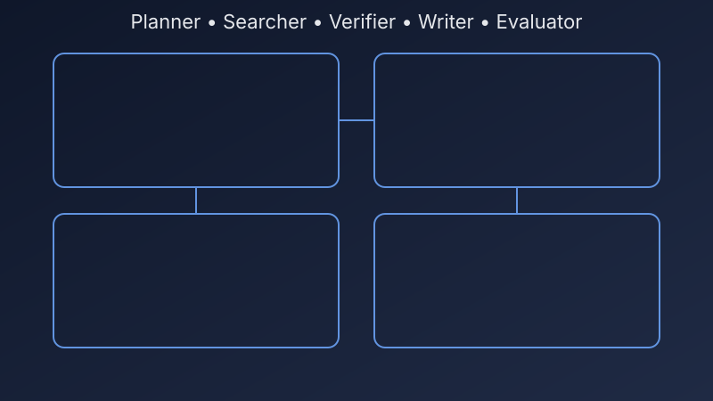
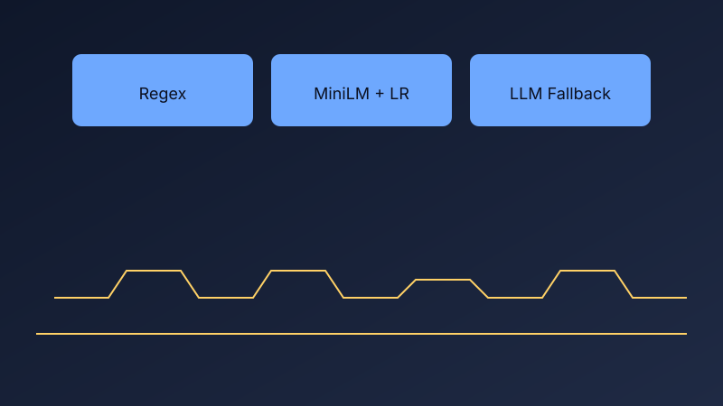
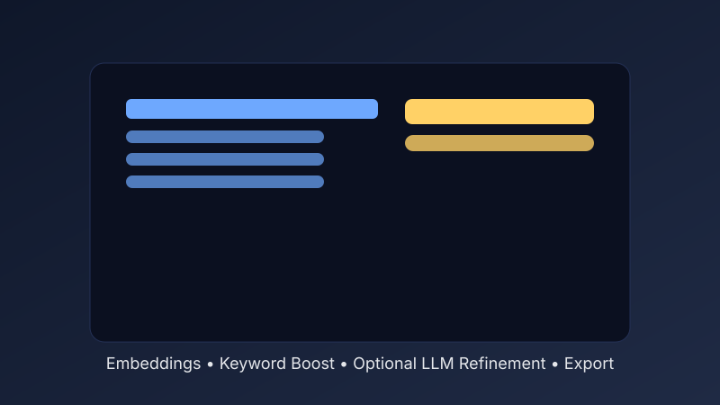

Selected Projects
-

Deep Research Assistant
Sep 2025End-to-end multi-agent reasoning system with Planner, Searcher, Verifier, Writer, and Evaluator modules that automate cited report generation, with a Gradio UI and CLI for transparent, reproducible runs.
- Python
- Gemini API
- Tavily
- Multi-Agent
- Gradio
-

Hybrid Log Classification
Jun 2025Production log classifier combining regex for structured patterns with MiniLM embeddings and logistic regression for context, plus an optional LLM fallback; served through FastAPI and a CLI.
- Python
- MiniLM
- scikit-learn
- FastAPI
-

AI Resume Analyzer
Feb 2025Ranks PDF/DOCX resumes against job descriptions using sentence-transformer embeddings and keyword boosts, with CSV export, optional Ollama refinement, and a Django API.
- Python
- Sentence Transformers
- Gradio
- Ollama
- Django